Kawara
Kawara · Fukuoka
Kawara
Highlighted on the Fukuoka map.
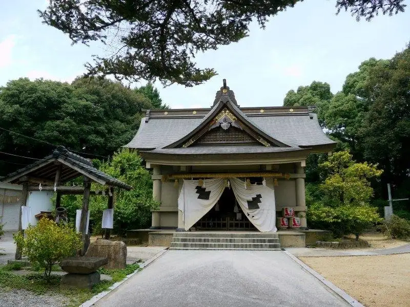
Dining
立喰いうどん
立喰いうどん
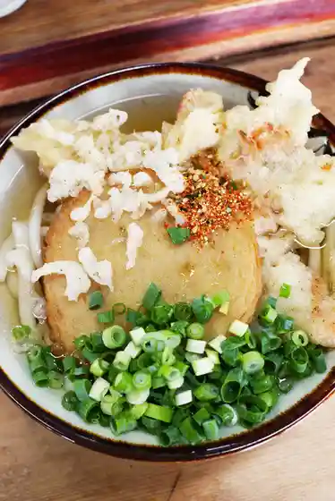
ドライブインかわら たこやき
ドライブインかわら たこやき
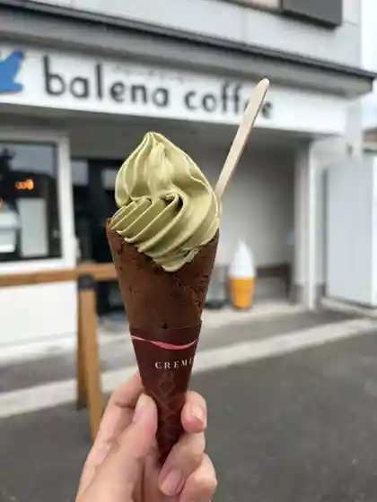
バレーナ コーヒー
バレーナ コーヒー
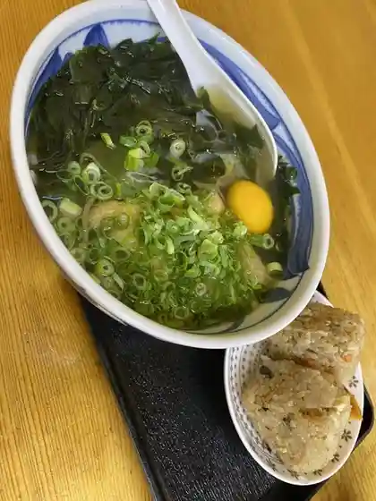
立喰い生麺 香春バイパス店
立喰い生麺 香春バイパス店
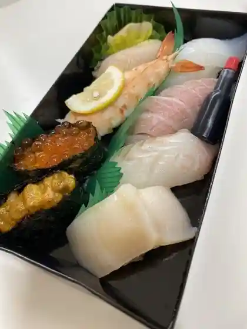
銀寿し 田川店
銀寿し 田川店
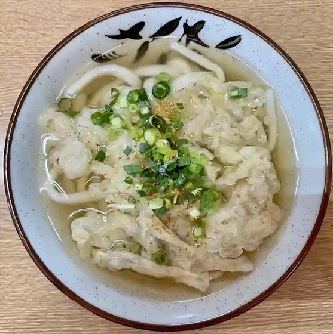
ドライブインかわら 立喰いうどん
ドライブインかわら 立喰いうどん
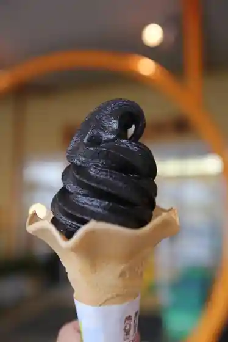
バニーズ
バニーズ
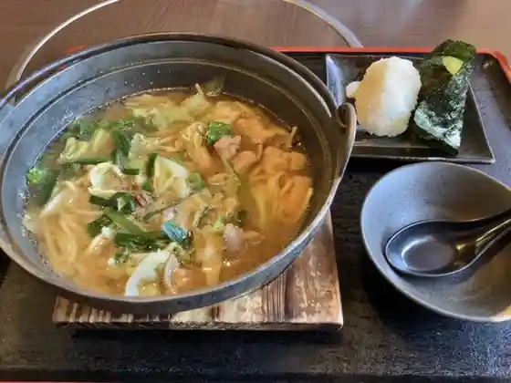
味の茶屋こぐれ
味の茶屋こぐれ
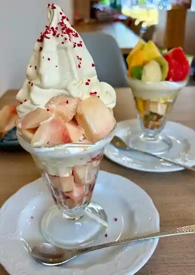
洋菓子のブッシュ
洋菓子のブッシュ
ラーメン猫猫
ラーメン猫猫
器と蕎麦 井坐
器と蕎麦 井坐
こだまうどん
こだまうどん
cafe shio
cafe shio
信玄
信玄
リストランテ エスポワール
リストランテ エスポワール
韓life
life
CAFE&SHOP Time Chil
CAFE&SHOP Time Chil
道の駅 香春
道の駅 香春
C.C.LABO
C.C.LABO
後藤の饅頭
後藤の饅頭
山小屋 香春本店
山小屋 香春本店
もっちゃん
もっちゃん
自家焙煎珈琲&米粉スイーツ HAN
自家焙煎珈琲&米粉スイーツ HAN
くまちゃんらぁめん
くまちゃんらぁめん
鶏匠
鶏匠
侍うどん
侍うどん
京屋清水和洋生菓子製造直売店
京屋清水和洋生菓子製造直売店
からあげタック
からあげタック
珈琲香舎
珈琲香舎
石田一龍 田川店
石田一龍 田川店
豚足ろくちゃん 田川店
豚足ろくちゃん 田川店
九州筑豊ラーメン山小屋 創業店
九州筑豊ラーメン山小屋 創業店
町家カフェ 鎌倉田川店
町家カフェ 鎌倉田川店
魚道楽
魚道楽
忍鮮魚
忍鮮魚
西田食品
西田食品
いけす 魚道楽
いけす 魚道楽
ジョイフル 田川香春店
ジョイフル 田川香春店
リンガーハット 田川香春店
リンガーハット 田川香春店
五吉庵
五吉庵
鳥ゆう
鳥ゆう
セブンイレブン 田川中津原店
セブンイレブン 田川中津原店
ランプベーカリー
ランプベーカリー
ミニストップ 田川香春町店
ミニストップ 田川香春町店
すし処ひろ
すし処ひろ
菓子工房 メッセージ
菓子工房 メッセージ
ほっともっと 香春町店
ほっともっと 香春町店
田川ホルモンセンター
田川ホルモンセンター
AZcafe Shidaka 福岡香春店
AZcafe Shidaka
森友養蜂場
森友養蜂場
あか鬼
あか鬼
Ginzushitagawa
Ginzushitagawa
Ganso Yamagoya Kawara Sogyo
Ganso Yamagoya Kawara Sogyo
Drivein Kawara
Drivein Kawara
Ringer Hut Tagawa Kawara
Ringer Hut Tagawa Kawara
Kyushu Chikuho Ramen Yamagoya Kawara Honten
Kyushu Chikuho Ramen Yamagoya Kawara Honten
Joyfull
Joyfull
Jonetsuteki Chinese Restaurant Ajito
Jonetsuteki Chinese Restaurant Ajito
Chinryuken
Chinryuken
Drive In Kawaratakoyaki
Drive In Kawaratakoyaki
Karaage Tuck
Karaage Tuck
Rokunoya Tagawa
Rokunoya Tagawa
Comic Net Tagawa Kawara
Comic Net Tagawa Kawara
Taste of Chaya Kogure
Taste of Chaya Kogure
Sakana Doraku
Sakana Doraku
Hotto Motto Kawaramachi
Hotto Motto Kawaramachi
Mentarako
Mentarako
Teuchi Soba Michikusa An
Teuchi Soba Michikusa An
Chinese Restaurant Daio
Chinese Restaurant Daio
Shunsaiya Hamasho
Shunsaiya Hamasho
Sushi Dokoro Hiro
Sushi Dokoro Hiro
Sunny S
Sunny S
Kuidoraku
Kuidoraku
Fried Chicken Mai Kawara
Fried Chicken Mai Kawara
Shingen
Shingen
Mocchan
Mocchan
Tachigui Namamen Bypass
Tachigui Namamen Bypass
Nishidashokuhin
Nishidashokuhin
Gokichi An
Gokichi An
Puchi
Puchi
Message
Message
Chidoriya Kawara
Chidoriya Kawara
Red Demon
Red Demon
Ajimi
Ajimi
Uodoraku
Uodoraku
Kushi Emon Kawara
Kushi Emon Kawara
Kodama Udon
Kodama Udon
Kyoya Shimizu Confectionery Manufacture Direct Sales
Kyoya Shimizu Confectionery Manufacture Direct Sales
Pastry of the Bush
Pastry of the Bush
Stay
HOTEL R9 The Yard 田川香春
HOTEL R9 The Yard
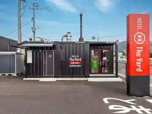
Sights
Tsuruoka Hachiman Shrine (Kawara)
Kawara Gaku (San no Gaku)
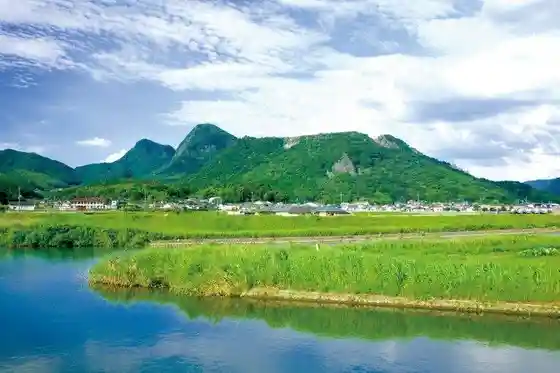
Kawara Kosodate Shien Shisetsu Kaparu
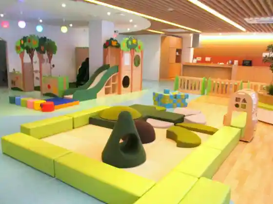
Kawara Shrine
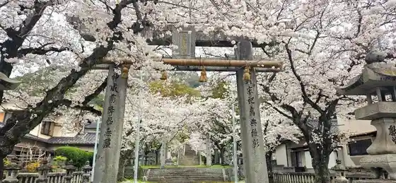
Roadside Station Kawara Wagie Village
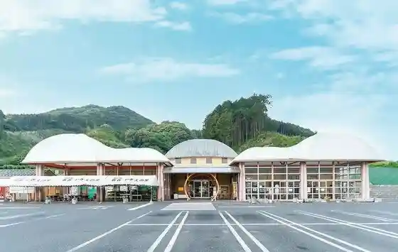
Kure Damu Keiryu Park
Kawara Sogo Sports Park
Shrine In Koza Ishidera
JR Sai Do Tokoro Eki
KAWARA TERRACE
Shrine In
Moto Hikari Gan Tera no Ogusu
Ushi Zan Yama Tozando
Manyo Park (Roadside Station Kawara)
Kami Kanpo Park
Rokuju Shaku Tekkyo (Daini Kin Hen Kawa Kyoryo)
Kawara History Museum
Komiya Hachiman Shrine
Nagamitsu Enjin no Takizakura Park
Kawara Tourism Association
Kiyoshi Shi Dono
Yayama no Oka (Kawara)
Ue Takano Kan'onji
Hachi Sa no Yamazakura
JR Kawara Eki
Enjin no Taki Park no Ume
O Chosei Falls (Kawara)